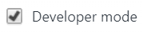
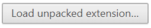

How to finish installing Viramate
- Copy this folder name by pressing CTRL-C:
- Visit
chrome://extensions
in your Chrome browser.
- Ensure that 'Developer mode' is turned on.

- Click 'Load unpacked extension...'

- Paste the folder name into the dialog box by selecting all the existing text in the 'Folder' field and then pressing CTRL-V.

- Click OK.